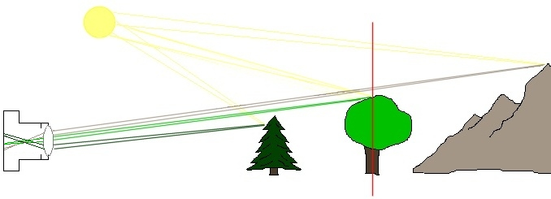
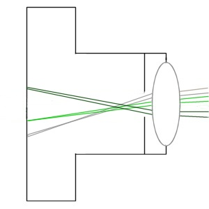
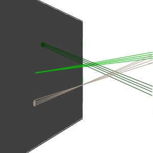
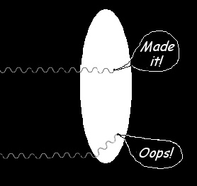

|
DOF FundamentalsVersion 1.2, © 2004, 2006 by Dale Cotton, all rights reserved The material in this tutorial applies equally to digital and film photography. Most photographers learn about depth-of-field, or DOF, pretty much by rote. But this is a subject for which one picture is worth more than the proverbial thousand words. In Fig 1 I've presented a very simple scenario that we'll use throughout this discussion:  Fig 1. Plane of focus passes through central tree This illustration shows a camera pointed at a scene. The camera's lens has been focused on the middle object, the deciduous tree. At the distance from the camera marked by the red line is a plane that is parallel to the plane of the camera's film or sensor (the back of the camera in this illustration). Anything on this plane of focus, a 2-dimensional slice through the 3-dimensional scene, will be precisely in focus. Anything in front of this plane – even by an inch – will be out of focus. Anything behind this plane – even by an inch – will be out of focus on the film or sensor. And the further anything is from this plane of focus the more out of focus it will be. To understand DOF we have to think in terms of light "rays" coming from a light source. These rays are nothing more than the straight-line paths of light "particles", or photons. In Fig 1 we follow the paths of six photons coming from the sun then reflecting off objects in the scene. More precisely, we're looking at two photons striking a single point on the mountain then bouncing back toward the camera, two more photons striking a single point on the deciduous tree then bouncing back toward the camera, and two more photons striking a single point on the conifer then bouncing back toward the camera.
Fig 2. Close-up of camera, wide aperture In Fig 2 we look more closely at what happens inside the camera. The front and back surfaces of the lens have been ground to the shape of shallow sections of a sphere. This causes our six photons to refract, or bend, in such a way that each pair of photons coming from a single point in the outside scene will converge at a single point inside the camera. (Note, however, that a real camera would have a much more complex set of convex and concave lens elements rather than the single convex lens employed in these illustrations.) The two photon paths shown in light green that come from the deciduous tree converge exactly on the film/sensor plane. The two photon paths from the mountain converge before the film/sensor plane. And the two photon paths from the conifer converge past the film/sensor plane. Let's consider the point on the mountain. In fact, there will be a very large number of photons arriving from that single point in the scene and entering the camera through various points in the front surface of the lens. But, again, because of the curvature of the lens, all these photons will converge at a single point inside the camera. Unfortunately however, this point is in front of the film/sensor plane – because the mountain is further from the camera than the plane of focus (red line). These photons continue to travel until they reach the film/sensor plane, but by that time their paths have begun to separate again. We see in Fig 3 that the result of the spread of all such photons from the point on the mountain, as they strike the film/sensor plane, is a small circle, aptly called the circle of confusion, or COC:
Fig 3. Circle of confusion on film/sensor plane We also see more closely that the photons from the conifer also cause a circle of confusion, although for the opposite reason – they have yet to converge. Only the photons from the point on the plane of focus through the deciduous tree exactly converge on the film/sensor plane, leaving only a single point of exposure. Tightening things upSo far we've been using the lens wide open, using a large diaphram aperture such as f/1 or f/1.2. Now let's narrow the aperture so that only the central portion of the lens can pass light. We see what happens in Fig 4:  Fig 4. Close-up of camera, narrow aperture Most photons arriving from each point in the scene are blocked from travelling on to the film/sensor plane. Those that do make it through the aperture travel on paths that are closer to being parallel to the centre-line of the camera. Technically, their angle of incidence is shallower:  Fig 3. Narrower aperture means smaller circles of confusion Acceptable confusionFilm frames and sensors are typically much smaller than prints. Let's say our camera is a so-called full frame digital or 35mm film, which has a frame size of roughly 1 by 1.5 inches, or 24 by 36 mm. If I make a 11 x 16.5 inch print from 35mm film, I've magnified the image 11 times. It follows that a COC that is 1/11th of a millimeter in diameter on the film will be a full millimeter in diameter in the print – which is certainly big enough to be seen. Nevertheless, there will be some COC diameter that is small enough such that it is still too small to be seen (or better too small to be printed as more than a single dot) for a given size print. We can see, then, that some degree of misconvergence can be tolerated. This tolerance is what gives us our depth of field:
Fig 6. Acceptable DOF In Fig 6 we see a possible depth of field, resulting from a particular combination of lens focal length, lens aperture, subject distance, print magnification, and print viewing distance. Notice that the red-shaded region extends twice as far behind the plane of focus as it does in front of the plane of focus. This is because photon paths from more distant objects have a narrower angle of incidence than those from closer objects. Notice also that the red-shaded region tapers off as it gets further from the exact plane of focus. This signifies that the circles of confusion are getting larger the further we get from the plane of focus, and therefore the less precisely focused each corresponding point on the print will be. Focal length and subject distanceSo far we've considered the effect of aperture on DOF. Another variable is the focal length of the lens. The longer the lens, the shallower the DOF for a given aperture. If we compare Fig 7 with Fig 2, we see that the COCs are going to be larger because any misconvergence has more room to spread out in:
Fig 7. Longer focal length This means that wide angle lenses have more DOF than normals and normals have more DOF than teles. Another implication is that in practice the bigger the camera format, the small the DOF. For example, the "normal" focal length lens for a 4x5" view camera is about 150 mm. But a 150 mm lens on an APS sensor dSLR would be a signicantly long tele. The DOF for a 150 mm lens remains the same, it's the application of the lens that changes. Similarly, the closer the plane of focus (subject distance), the greater the separation between photon paths from the same point, also yielding larger COCs. Diffraction and minimum apertureGoing back to aperture, simplistically it would seem that the narrower the aperture we use the larger the resulting DOF, and therefore an aperture as small as a pin hole would give us nearly unlimited DOF. Unfortunately, photons arriving at the very edge of the diaphram opening tend to change paths and scatter, which is called diffraction:  Fig 8. Diffraction = photons colliding with an aperture edge For any focal length and subject distance, there is an aperture size, smaller than which diffraction robs any gains made by the shallower angle of incidence. And, of course, another consequence of reducing apeture is lengthening exposure time (to collect enough photons to expose the film or sensor). And the longer the exposure the greater the blur resulting from any subject motion. Pragmatically, the smallest aperture before diffraction loss takes over varies with the film/sensor size. Experimentation has shown me that f/11 is the lower limit for 35mm; f/8 is commonly thought to be the lower limit for APS dSLRs, 4x5 view camera users routinely stop down to f/32; and at the opposite extreme, digicams don't even offer apertures smaller than about f/8. Further readingDepth of Field Hell by Mike Johnston Depth of Field Hell–The Sequel by Ctein Depth of Field by Dr. Ching-Kuang Shene DOF Master - Depth of Field Calculators by Don Fleming Depth of Field and the Digital Domain by Bob Atkins |